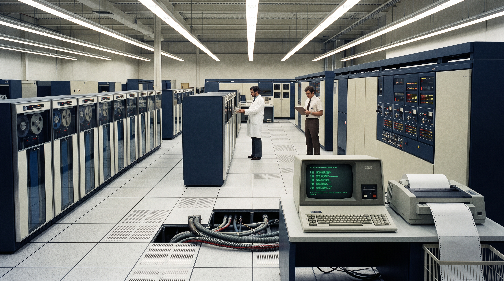

S02 • COD-002B
Atlas de la Computación: Del Mainframe al PC & Red Bancaria
⛶ Pantalla Completa
⬅ Mapa S02
🖥️ Simulador 3270 ↗
1
🏢 Sala Mainframe IBM
2
🗄️ Minicomputador VAX
3
🖥️ AS/400 & PC Actual
4
💻 PC/XT (1983) vs Portátil
5
🗺️ Flujo de Red Bancaria
AÑOS 60-80 HASTA HOY
1. La Colosal "Sala de Cristal" del Host IBM
◀ Anterior
1 / 5
Siguiente ▶

🔍 Toca para ampliar